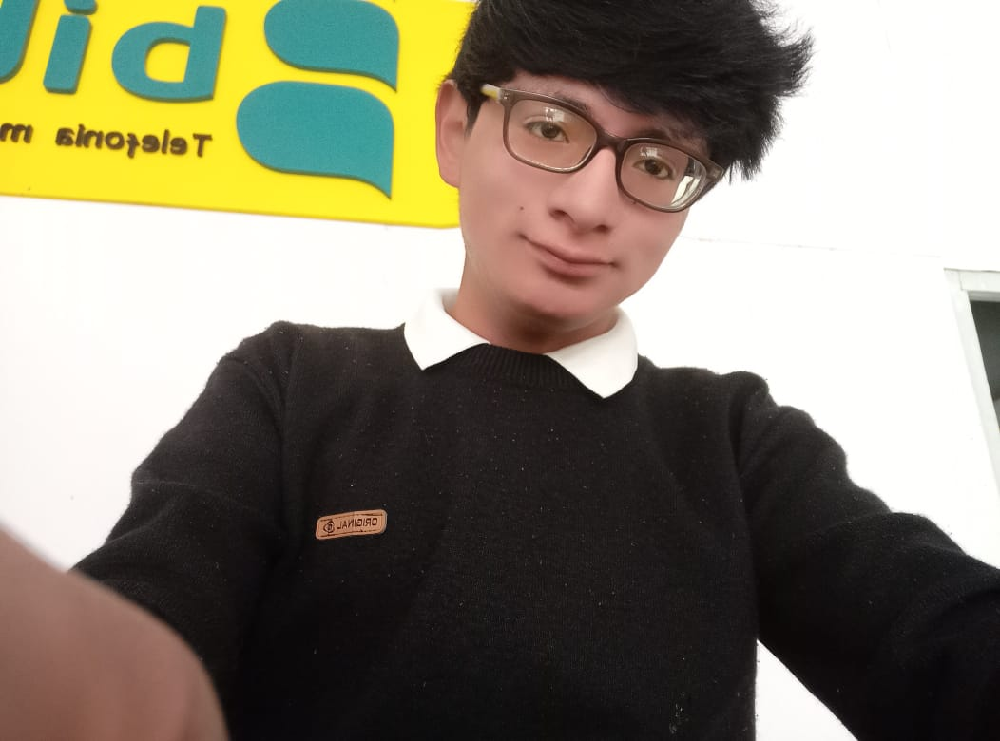

Sr. MIGUEL ANGEL ATENCIO DE LA CRUZ Especializado en programacion software graduado en SENATI
Naci el 27 de febrero del 2005, despues de años empece estudiar en la escuela zoila Amoreti de Odria termiando en el año 2015 despues empece mis estudiios en el colegio Daniel Alcides Carrion y aumque no lo esperaba, termine cambiandome de colegio en tercer grado de colegio y comenze a estudiar en el Cesar Vallejo ahi fue donde termine mi colegio en el año 2021. Empece a estudiar en SENATI terminado el colegio con 17 años inicie a especializarme en el curso de ingenieria de software en el año 2022 aunque fue complicado adaptarme al entorno de la clase poco a poco fui especializandome en esta carrera con practica y anotaciones pude aprender el curso segun hiba avanzando.
